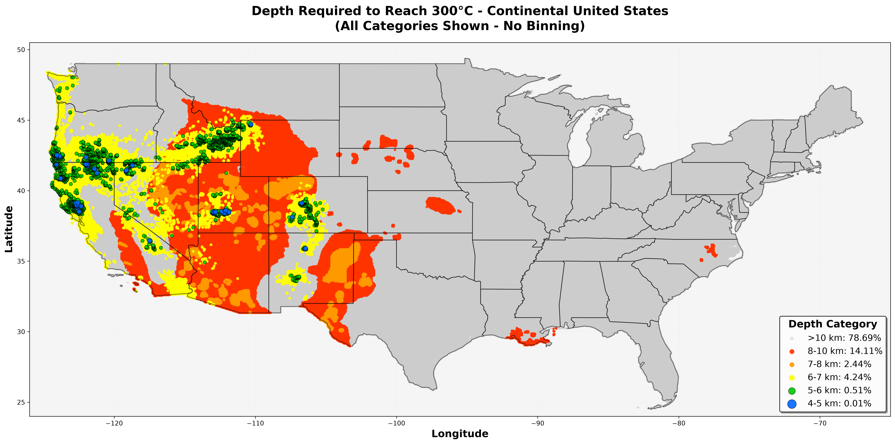

This interactive map shows the estimated drilling depth required to reach 300°C (supercritical geothermal conditions) across the continental United States. The analysis combines high-resolution Stanford thermal models (0-7 km) with digitized SMU temperature-at-depth maps (7.5-10 km).
Key Finding: 25.5% of CONUS can reach 300°C within 10 km drilling depth. Shallow cells (green, blue, navy) are drawn larger to remain visible at continental scale.

Analysis conducted with Claude Code (Sonnet 4.5) by Anthropic.